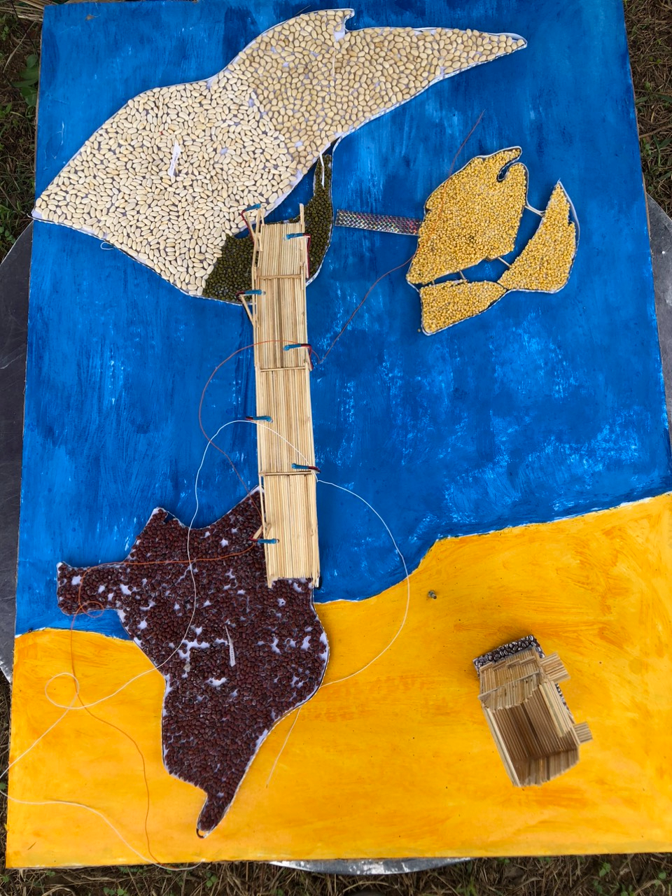

"Toàn dân bảo vệ an ninh Tổ Quốc -
Đại đoàn kết toàn dân"

"Toàn dân bảo vệ an ninh Tổ Quốc -
Đại đoàn kết toàn dân"
Duy Vinh là một trong 14 đơn vị hành chính cấp xã của Huyện Duy Xuyên, tỉnh Quảng Nam, nằm về phía Đông của huyện, cách trung tâm huyện 10 km. Phía Bắc giáp xã Cẩm Kim, phía Tây giáp xã Duy Phước, phía Nam giáp xã Duy Thành, phía Đông giáp xã Duy Nghĩa.
Duy Vinh là nơi hợp lưu giao thủy của các dòng sông Thu Bồn, Ly Ly và Trường Giang. Hai dòng sông Thu Bồn và Ly Ly chảy dọc theo xã và chia xã thành 3 vùng riêng biệt, tổng diện tích tự nhiên 10,07km2, dân số tính đến nay có 2711 hộ với 10.601 nhân khẩu. Nhân dân sinh sống bằng ngành nghề đa dạng, cơ cấu kinh tế của xã là Công nghiệp, Thương mại dich vụ và Nông nghiệp trong đó đánh bắt nuôi trồng thủy sản đuợc xác định là ngành kinh tế mũi nhọn của địa phương.
Trong chiến tranh Duy Vinh là nơi tiếp giáp ranh giới giữa ta và địch, mảnh đất này hứng chịu nhiều hậu quả chiến tranh nặng nề nhất. Tổng số người có công với cách mạng được Nhà nước tặng thưởng Huân, Huy chương là 1.290 người. Tổng số người hy sinh được Nhà nước công nhận liệt sỹ 452 người.
br
Trong công cuộc xây dựng và bảo vệ Tổ quốc, nhân dân Duy Vinh đã phát huy truyền thống đoàn kết, phấn đấu vượt qua khó khăn thử thách trong cuộc sống; tập trung hàn gắn vết thương chiến tranh, chăm lo phát phát triển kinh tế, đảm bảo an ninh chính trị, trật tự an toàn xã hội, kế thừa và phát triển các hoạt động văn hóa truyền thống tốt đẹp của địa phương.
Theo nguồn tư liệu từ gia phả của các tộc họ trong xã, từ thế kỷ XV, trên vùng đất hoang vu đầm lầy nầy đã xuất hiện cộng đồng dân cư từ các tỉnh phía Bắc mà chủ yếu là Thanh Hóa di cư vào lập nghiệp và một bộ phận dân cư khác vào bằng đường thủy ven dòng sông Thu Bồn sau khi chúa Nguyễn Hoàng làm trấn thủ Dinh Quảng Nam. Họ đã định cư và xây dựng vùng đất này từ những ngày đầu hình thành xứ Quảng Nam.
Theo thời gian và điều kiện biến đổi của lịch sử, chính trị, văn hóa - xã hội, xã Duy Vinh nhiều lần tách nhập thay đổi tên gọi, địa giới hành chính qua các giai đoạn:
Trước cách mạng tháng Tám 1945, có tên gọi là làng Bàn Thạch, thuộc tổng An Lạc và tổng Mỹ Khê của phủ Duy Xuyên. Bao gồm các xóm thôn như sau: Đông Thành, Đông Tịnh, Đông Giang: thôn 1; Vĩnh Phước, Vĩnh Tuy, Nam Hòa, Nam Tịnh, Nam Sơn: thôn 2; Trà Nhiêu Đông, Đông Hưng : thôn 3; Hà Phổ, Hà Bình, Hà Tịnh ,Thi Lai, Hà Lăng, Mỹ Trung: thôn 4; Trà Nam, Trà Lộ: thôn 5, Hắc Liềm, và Tây Ngưng nay thuộc xã Duy Thành và Duy Nghĩa, Hà Đước, Hà Lo, nay thuộc xã Duy Phước, Kim Bồng Đông, Kim Bồng Tây; tổng Mỹ Khê nay thuộc xã Cẩm Kim.

Từ năm 1945-1947, phân thành hai xã Tân Minh và Hồng Phước, xã Tân Minh gồm các thôn: Trà Nhiêu Đông, Trà Nhiêu Nam, Trà Lộ, Thi Lai. Xã Hồng Phước gồm: Vĩnh Phước, Vĩnh Tuy , Nam Hòa, Nam Tịnh , Đông Giang, Đông Thành, Đông Tịnh, Hà Tân, Hà Mỹ, Hà Phổ, Hà Bình, Bình Khê.
Từ năm 1947-1950 lấy tên là xã Duy Ninh từ 02 xã Tân Minh và Hồng Phước sát nhập lại gồm 5 thôn Trà Đông , Trà Nam, Phương Trung, An Phú , Tây Hồ. Trụ sở đóng tại chùa Thầy Phẩm (Nay là chùa An Trung).
Từ năm 1951-1955, xã Duy Vinh sát nhập thêm một số thôn như: 2, 3, 4, 5, 6, 8 (xã Duy Thành); thôn 4, 9 (xã Cẩm Nam); thôn 1, 2, 3, 10, 11 làng Kim Bồng (xã Cẩm Kim ) và thôn 7 lẻ (xã Điện Minh ) như vậy xã có 10 thôn .
Từ năm 1954-1964, xã tiếp tục chia tách thành 2 xã Xuyên An và Xuyên Long. Xã Xuyên An chính quyền cũ chia thành 3 ấp trực thuộc huyện Duy Xuyên gồm thôn 1, 2, 4. Xã Xuyên Long có 2 ấp Trà Đông và Trà Nam thuộc quận Hiếu Nhơn gồm thôn 3 và thôn 5.
Từ năm 1965-1975 chính quyền Thiệu chia 2 xã Xuyên An và Xuyên Long . Xã Xuyên An là Xuyên An cũ, chia làm 3 thôn: thôn Đông, thôn Trung và thôn Tây trực thuộc huyện Duy Xuyên. Xã Xuyên Long là Xuyên Long cũ có 4 thôn trong đó Hà Bình ( xã Xuyên An cũ ) cũng thuộc về Duy Xuyên. Năm 1967 chúng lại tiếp tục cắt xã Xuyên Long về thuộc quận Hiếu Nhơn ( Hội An ).
Từ ngày 2/9/1975, sáp nhập xã Xuyên An và xã Xuyên Long thành xã Duy Vinh ngày nay gồm 5 thôn : 1, 2, 3, 4, 5. Tháng 10/1992 tại kỳ họp lần thứ 9 HĐND xã Duy Vinh khóa VII thống nhất chia tách thôn 4 thành 2 thôn là thôn 4a và thôn 4b. Tại kỳ họp lần thứ 8 HĐND xã Duy Vinh khóa VIII đã thống nhất thay đổi tên gọi của các thôn :
Thôn 1 đổi thành thôn Đông Bình
Thôn 2 đổi thành thôn Vĩnh Nam
Thôn 3 đổi thành thôn Trà Đông
Thôn 4a đổi thành thôn Hà Thuận
Thôn 4b đổi thành thôn Hà Mỹ
Thôn 5 đổi thành thôn Trà Nam .
Với đặc điểm tình hình khí hậu tài nguyên có nhiều thuận lợi nhưng quê hương Duy Vinh cũng gặp không ít khó khăn bất lợi của thiên nhiên. Nhưng các thế hệ cha ông đã không nản chí, đấu tranh quyết liệt với thiên nhiên để khai phá lập nên xóm làng. Qúa trình xây dựng quê hương Duy Vinh là kết quả thấm đượm bao hồ hôi nước mắt, xương máu của bao thế hệ.
Qua mỗi mùa lũ lụt đất đai được bồi bổ lượng phù sa rất lớn, nghề nông nghiệp phát triển mạnh mẽ với những đồng lúa, đất màu mượt mà tươi tốt, với địa thế là vùng sông nước thuận lợi cho nghề khai thác đánh bắt thủy hải sản cũng như làng nghề chiếu cói truyền thống nổi tiếng được hình thành, các dịch vụ trao đổi buôn bán, thương mại được phát triển, tàu thuyền lên nguồn xuống biển, ra bắc vào nam tạo nên làng Bàn Thạch nơi giao lưu buôn bán sầm uất vang bóng một thời.

Xuất phát từ lao động sản xuất, giao lưu buôn bán với các miền trong nước, người dân đã biết tiếp thu chọn lọc văn hóa của từng miền, từng vùng kết hợp với truyền thống văn hóa của địa phương sáng tạo nên những giá trị văn hóa độc đáo mang đậm nét văn hóa làng. Thời gian và chiến tranh đã làm mất đi một phần văn hóa vật thể như miếu thờ Quan Công do người Tàu xây dựng ở Trà Nhiêu (nay là thôn Trà Đông) đối diện với chùa Ông (Hội An) cách đây khoảng 300 năm là minh chứng , cùng với làng Chăm cũng tồn tại ......Ngoài ra kho tàng văn hóa phi vật thể được nhân dân làng Trà Nhiêu gìn giữ lưu truyền từ đời nầy sang đời khác. Các sinh hoạt nghi thức của từng dòng tộc, xóm làng các lệ tế xuân - thu, các làn điệu dân ca vẫn in đậm nét bản sắc văn hóa làng quê ...